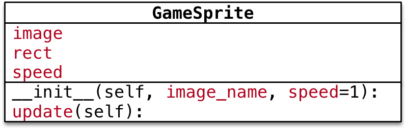

pygame 快速入门
目标
- 项目准备
- 使用
pygame创建图形窗口 - 理解 图像 并实现图像绘制
- 理解 游戏循环 和 游戏时钟
- 理解 精灵 和 精灵组
项目准备
- 新建 飞机大战 项目
- 新建一个
hm_01_pygame入门.py - 导入 游戏素材图片
游戏的第一印象
- 把一些 静止的图像 绘制到 游戏窗口 中
- 根据 用户的交互 或其他情况，移动 这些图像，产生动画效果
- 根据 图像之间 是否发生重叠，判断 敌机是否被摧毁 等其他情况
01. 使用 pygame 创建图形窗口
小节目标
- 游戏的初始化和退出
- 理解游戏中的坐标系
- 创建游戏主窗口
- 简单的游戏循环
可以将图片素材 绘制 到 游戏的窗口 上，开发游戏之前需要先知道 如何建立游戏窗口！
1.1 游戏的初始化和退出
- 要使用
pygame提供的所有功能之前，需要调用init方法 - 在游戏结束前需要调用一下
quit方法
| 方法 | 说明 |
|---|---|
pygame.init() |
导入并初始化所有 pygame 模块，使用其他模块之前，必须先调用 init 方法 |
pygame.quit() |
卸载所有 pygame 模块，在游戏结束之前调用！ |

import pygame
pygame.init()
# 游戏代码...
pygame.quit()
1.2 理解游戏中的坐标系
- 坐标系
- 原点 在 左上角
(0, 0) - x 轴 水平方向向 右，逐渐增加
- y 轴 垂直方向向 下，逐渐增加
- 原点 在 左上角

-
在游戏中，所有可见的元素 都是以 矩形区域 来描述位置的
- 要描述一个矩形区域有四个要素：
(x, y) (width, height)
- 要描述一个矩形区域有四个要素：
-
pygame专门提供了一个类pygame.Rect用于描述 矩形区域
Rect(x, y, width, height) -> Rect

提示
pygame.Rect是一个比较特殊的类，内部只是封装了一些数字计算- 不执行
pygame.init()方法同样能够直接使用
案例演练
需求
- 定义
hero_rect矩形描述 英雄的位置和大小 - 输出英雄的 坐标原点（
x和y） - 输出英雄的 尺寸（宽度 和 高度）
hero_rect = pygame.Rect(100, 500, 120, 126)
print("坐标原点 %d %d" % (hero_rect.x, hero_rect.y))
print("英雄大小 %d %d" % (hero_rect.width, hero_rect.height))
# size 属性会返回矩形区域的 (宽, 高) 元组
print("英雄大小 %d %d" % hero_rect.size)
1.3 创建游戏主窗口
pygame专门提供了一个 模块pygame.display用于创建、管理 游戏窗口
| 方法 | 说明 |
|---|---|
pygame.display.set_mode() |
初始化游戏显示窗口 |
pygame.display.update() |
刷新屏幕内容显示，稍后使用 |
set_mode 方法
set_mode(resolution=(0,0), flags=0, depth=0) -> Surface
-
作用 —— 创建游戏显示窗口
-
参数
resolution指定屏幕的宽和高，默认创建的窗口大小和屏幕大小一致flags参数指定屏幕的附加选项，例如是否全屏等等，默认不需要传递depth参数表示颜色的位数，默认自动匹配
-
返回值
- 暂时 可以理解为 游戏的屏幕，游戏的元素 都需要被绘制到 游戏的屏幕 上
-
注意：必须使用变量记录
set_mode方法的返回结果！因为：后续所有的图像绘制都基于这个返回结果
# 创建游戏主窗口
screen = pygame.display.set_mode((480, 700))
1.4 简单的游戏循环
- 为了做到游戏程序启动后，不会立即退出，通常会在游戏程序中增加一个 游戏循环
- 所谓 游戏循环 就是一个 无限循环
- 在 创建游戏窗口 代码下方，增加一个无限循环
- 注意：游戏窗口不需要重复创建
# 创建游戏主窗口
screen = pygame.display.set_mode((480, 700))
# 游戏循环
while True:
pass
02. 理解 图像 并实现图像绘制
- 在游戏中，能够看到的 游戏元素 大多都是 图像
- 图像文件 初始是保存在磁盘上的，如果需要使用，第一步 就需要 被加载到内存
- 要在屏幕上 看到某一个图像的内容，需要按照三个步骤：
- 使用
pygame.image.load()加载图像的数据 - 使用 游戏屏幕 对象，调用
blit方法 将图像绘制到指定位置 - 调用
pygame.display.update()方法更新整个屏幕的显示
- 使用

提示：要想在屏幕上看到绘制的结果，就一定要调用
pygame.display.update()方法
代码演练 I —— 绘制背景图像
需求
- 加载
background.png创建背景 - 将 背景 绘制在屏幕的
(0, 0)位置 - 调用屏幕更新显示背景图像
# 绘制背景图像
# 1> 加载图像
bg = pygame.image.load("./images/background.png")
# 2> 绘制在屏幕
screen.blit(bg, (0, 0))
# 3> 更新显示
pygame.display.update()
代码演练 II —— 绘制英雄图像
需求
- 加载
me1.png创建英雄飞机 - 将 英雄飞机 绘制在屏幕的
(200, 500)位置 - 调用屏幕更新显示飞机图像
# 1> 加载图像
hero = pygame.image.load("./images/me1.png")
# 2> 绘制在屏幕
screen.blit(hero, (200, 500))
# 3> 更新显示
pygame.display.update()
透明图像
png格式的图像是支持 透明 的- 在绘制图像时，透明区域 不会显示任何内容
- 但是如果下方已经有内容，会 透过 透明区域 显示出来
理解 update() 方法的作用
可以在
screen对象完成 所有blit方法之后，统一调用一次display.update方法，同样可以在屏幕上 看到最终的绘制结果
- 使用
display.set_mode()创建的screen对象 是一个 内存中的屏幕数据对象- 可以理解成是 油画 的 画布
screen.blit方法可以在 画布 上绘制很多 图像- 例如：英雄、敌机、子弹…
- 这些图像 有可能 会彼此 重叠或者覆盖
display.update()会将 画布 的 最终结果 绘制在屏幕上，这样可以 提高屏幕绘制效率，增加游戏的流畅度
案例调整
# 绘制背景图像
# 1> 加载图像
bg = pygame.image.load("./images/background.png")
# 2> 绘制在屏幕
screen.blit(bg, (0, 0))
# 绘制英雄图像
# 1> 加载图像
hero = pygame.image.load("./images/me1.png")
# 2> 绘制在屏幕
screen.blit(hero, (200, 500))
# 3> 更新显示 - update 方法会把之前所有绘制的结果，一次性更新到屏幕窗口上
pygame.display.update()
03. 理解 游戏循环 和 游戏时钟
现在 英雄飞机 已经被绘制到屏幕上了，怎么能够让飞机移动呢 ？
3.1 游戏中的动画实现原理
- 跟 电影 的原理类似，游戏中的动画效果，本质上是 快速 的在屏幕上绘制 图像
- 电影是将多张 静止的电影胶片 连续、快速的播放，产生连贯的视觉效果！
- 一般在电脑上 每秒绘制 60 次，就能够达到非常 连续 高品质 的动画效果
- 每次绘制的结果被称为 帧 Frame


3.2 游戏循环
游戏的两个组成部分
游戏循环的开始 就意味着 游戏的正式开始

游戏循环的作用
- 保证游戏 不会直接退出
- 变化图像位置 —— 动画效果
- 每隔
1 / 60 秒移动一下所有图像的位置 - 调用
pygame.display.update()更新屏幕显示
- 每隔
- 检测用户交互 —— 按键、鼠标等…
3.3 游戏时钟
pygame专门提供了一个类pygame.time.Clock可以非常方便的设置屏幕绘制速度 —— 刷新帧率- 要使用 时钟对象 需要两步：
- 1）在 游戏初始化 创建一个 时钟对象
- 2）在 游戏循环 中让时钟对象调用
tick(帧率)方法
tick方法会根据 上次被调用的时间，自动设置 游戏循环 中的延时
# 3. 创建游戏时钟对象
clock = pygame.time.Clock()
i = 0
# 游戏循环
while True:
# 设置屏幕刷新帧率
clock.tick(60)
print(i)
i += 1
3.4 英雄的简单动画实现
需求
- 在 游戏初始化 定义一个
pygame.Rect的变量记录英雄的初始位置 - 在 游戏循环 中每次让 英雄 的
y - 1—— 向上移动 y <= 0将英雄移动到屏幕的底部
提示：
- 每一次调用
update()方法之前，需要把 所有的游戏图像都重新绘制一遍- 而且应该 最先 重新绘制 背景图像
# 4. 定义英雄的初始位置
hero_rect = pygame.Rect(150, 500, 102, 126)
while True:
# 可以指定循环体内部的代码执行的频率
clock.tick(60)
# 更新英雄位置
hero_rect.y -= 1
# 如果移出屏幕，则将英雄的顶部移动到屏幕底部
if hero_rect.y <= 0:
hero_rect.y = 700
# 绘制背景图片
screen.blit(bg, (0, 0))
# 绘制英雄图像
screen.blit(hero, hero_rect)
# 更新显示
pygame.display.update()
作业
- 英雄向上飞行，当 英雄完全从上方飞出屏幕后
- 将飞机移动到屏幕的底部
if hero_rect.y + hero_rect.height <= 0:
hero_rect.y = 700
提示
Rect的属性bottom = y + height
if hero_rect.bottom <= 0:
hero_rect.y = 700
3.5 在游戏循环中 监听 事件
事件 event
- 就是游戏启动后，用户针对游戏所做的操作
- 例如：点击关闭按钮，点击鼠标，按下键盘…
监听
- 在 游戏循环 中，判断用户 具体的操作
只有 捕获 到用户具体的操作，才能有针对性的做出响应
代码实现
pygame中通过pygame.event.get()可以获得 用户当前所做动作 的 事件列表- 用户可以同一时间做很多事情
- 提示：这段代码非常的固定，几乎所有的
pygame游戏都 大同小异！
# 游戏循环
while True:
# 设置屏幕刷新帧率
clock.tick(60)
# 事件监听
for event in pygame.event.get():
# 判断用户是否点击了关闭按钮
if event.type == pygame.QUIT:
print("退出游戏...")
pygame.quit()
# 直接退出系统
exit()
04. 理解 精灵 和 精灵组
4.1 精灵 和 精灵组
- 在刚刚完成的案例中，图像加载、位置变化、绘制图像 都需要程序员编写代码分别处理
- 为了简化开发步骤，
pygame提供了两个类pygame.sprite.Sprite—— 存储 图像数据 image 和 位置 rect 的 对象pygame.sprite.Group

精灵
-
在游戏开发中，通常把 显示图像的对象 叫做精灵
Sprite -
精灵 需要 有 两个重要的属性
image要显示的图像rect图像要显示在屏幕的位置
-
默认的
update()方法什么事情也没做- 子类可以重写此方法，在每次刷新屏幕时，更新精灵位置
-
注意：
pygame.sprite.Sprite并没有提供image和rect两个属性- 需要程序员从
pygame.sprite.Sprite派生子类 - 并在 子类 的 初始化方法 中，设置
image和rect属性
- 需要程序员从
精灵组
- 一个 精灵组 可以包含多个 精灵 对象
- 调用 精灵组 对象的
update()方法- 可以 自动 调用 组内每一个精灵 的
update()方法
- 可以 自动 调用 组内每一个精灵 的
- 调用 精灵组 对象的
draw(屏幕对象)方法- 可以将 组内每一个精灵 的
image绘制在rect位置
- 可以将 组内每一个精灵 的
Group(*sprites) -> Group
注意：仍然需要调用
pygame.display.update()才能在屏幕看到最终结果
4.2 派生精灵子类
- 新建
plane_sprites.py文件 - 定义
GameSprite继承自pygame.sprite.Sprite
注意
- 如果一个类的 父类 不是
object - 在重写 初始化方法 时，一定要 先
super()一下父类的__init__方法 - 保证父类中实现的
__init__代码能够被正常执行

属性
image精灵图像，使用image_name加载rect精灵大小，默认使用图像大小speed精灵移动速度，默认为1
方法
update每次更新屏幕时在游戏循环内调用- 让精灵的
self.rect.y += self.speed
- 让精灵的
提示
image的get_rect()方法，可以返回 pygame.Rect(0, 0, 图像宽, 图像高) 的对象
import pygame
class GameSprite(pygame.sprite.Sprite):
"""游戏精灵基类"""
def __init__(self, image_name, speed=1):
# 调用父类的初始化方法
super().__init__()
# 加载图像
self.image = pygame.image.load(image_name)
# 设置尺寸
self.rect = self.image.get_rect()
# 记录速度
self.speed = speed
def update(self, *args):
# 默认在垂直方向移动
self.rect.y += self.speed
4.3 使用 游戏精灵 和 精灵组 创建敌机
需求
- 使用刚刚派生的 游戏精灵 和 精灵组 创建 敌机 并且实现敌机动画
步骤
- 使用
from导入plane_sprites模块from导入的模块可以 直接使用import导入的模块需要通过 模块名. 来使用
- 在 游戏初始化 创建 精灵对象 和 精灵组对象
- 在 游戏循环中 让 精灵组 分别调用
update()和draw(screen)方法
职责
- 精灵
- 封装 图像 image、位置 rect 和 速度 speed
- 提供
update()方法，根据游戏需求，更新位置 rect
- 精灵组
- 包含 多个 精灵对象
update方法，让精灵组中的所有精灵调用update方法更新位置draw(screen)方法，在screen上绘制精灵组中的所有精灵
实现步骤
-
- 导入
plane_sprites模块
- 导入
from plane_sprites import *
-
- 修改初始化部分代码
# 创建敌机精灵和精灵组
enemy1 = GameSprite("./images/enemy1.png")
enemy2 = GameSprite("./images/enemy1.png", 2)
enemy2.rect.x = 200
enemy_group = pygame.sprite.Group(enemy1, enemy2)
-
- 修改游戏循环部分代码
# 让敌机组调用 update 和 draw 方法
enemy_group.update()
enemy_group.draw(screen)
# 更新屏幕显示
pygame.display.update()